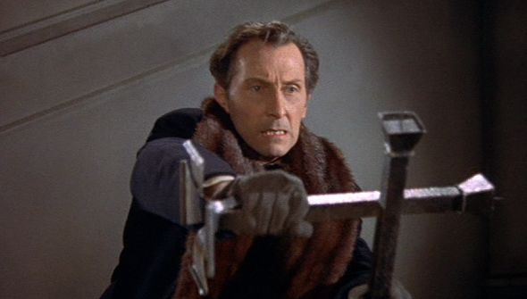

Peter Wilton Cushing, OBE (26 May 1913 – 11 August 1994) was an English actor and a BAFTA TV Award Best Actor winner in 1956.
He is mainly known for his prolific appearances in Hammer Films, in which he played strong character roles like the sinister scientist Baron Frankenstein,
Sherlock Holmes and the vampire hunter Dr. Van Helsing, among many other roles. He appeared frequently opposite Christopher Lee and, occasionally, Vincent Price.